This article fits regression coefficients that change with location or with time. It covers a spatially varying slope and a spatially varying intercept, a time-varying slope under four temporal priors, and ends with rules for when a varying coefficient is worth fitting. The Spatial models and Temporal models articles introduce the spatial and temporal fields this one builds on. Installation is covered in Get started.
Why a coefficient varies
A regression slope is one number for the whole dataset. The effect of temperature on a plant’s growth is then the same at the coast and in the mountains, and the effect of a vaccination campaign the same in its first year and its tenth. Often the data say otherwise. A species can respond strongly to rainfall at the dry edge of its range and hardly at all at the wet centre, and the link between a pollutant and hospital admissions can weaken as treatment improves.
A spatial or temporal field, as in the sibling articles, shifts the level of the response from place to place or from year to year. A varying coefficient changes the strength of a covariate’s effect instead: the field multiplies the covariate. Fitting one coefficient where the effect changes averages over the places or times where it is strong and where it is weak. The average can be close to zero although the effect is large everywhere it is measured.
The model
Consider observations of a response with one covariate , taken at locations in the plane. A spatially varying coefficient (SVC) on the slope writes the linear predictor as
where
and
are fixed effects and
is a function of location. The slope at location
is
.
The field
has a Gaussian-process prior with mean zero, marginal variance
and an exponential correlation
between two locations a distance
apart, so
is the range over which neighbouring slopes stay alike.
spatial_svc() approximates the process by a
nearest-neighbour Gaussian process (NNGP), in which each location is
conditioned on its nn nearest previously ordered locations.
With terms = 1, the default, the field multiplies the
intercept column instead, and
.
A time-varying coefficient (TVC) has the same form with time in place of location:
where
is the time of observation
.
temporal_tvc() puts one of four priors on
.
A first-order random walk (rw1) makes consecutive
increments
independent Gaussian with precision
;
a second-order walk (rw2) does the same for second
differences; an autoregressive process (ar1) carries a
correlation
between consecutive values. The three read the time index as a position
on a grid, one step between consecutive distinct times. The Gaussian
process (gp) reads the time values themselves, so a gap of
ten days counts as ten days. It is the structure for irregular
spacing.
Both models share an alias. Adding a constant
to every value of
and subtracting it from
leaves every
unchanged, whatever the covariate, so the data cannot tell
from the level of
.
tulpa removes this direction before the field reaches the likelihood.
The field is centred on its way into
:
what enters is
,
with
the mean of the field over its distinct locations (or time points). The
stored draws of
are centred the same way, so they sum to zero in every draw, and
is the slope at the average location. For rw1 and
rw2, whose prior says nothing about the level of
,
tulpa also supplies a prior on that level; ar1,
gp and the spatial process already carry one. The quantity
to report is the total slope
,
which does not depend on how the alias was resolved.
Neither field has a nested-Laplace kernel.
mode = "exact", and mode = "auto" with it,
samples the fixed effects, the field and its hyperparameters jointly
with the No-U-Turn sampler (NUTS). The fits below run two chains of 600
iterations, 300 of them warmup.
ctl <- list(n_iter = 600, warmup = 300, n_chains = 2, seed = 1)A spatially varying slope
Simulating data
Lay 200 sites uniformly on the unit square, one observation per site.
The slope of a Poisson count on the covariate
is
on average and varies smoothly around it: higher along the lower middle,
lower along the top edge. The deviation bsurf is centred
over the sites, so the true average slope is exactly
,
the quantity
estimates.
set.seed(1)
n <- 200
lon <- runif(n)
lat <- runif(n)
bsurf <- 0.6 * sin(3 * lon) + 0.5 * cos(3 * lat)
bsurf <- bsurf - mean(bsurf)
x <- rnorm(n)
ds <- data.frame(lon = lon, lat = lat, x = x)
ds$y <- rpois(n, exp(0.3 + (0.7 + bsurf) * x))
range(0.7 + bsurf)
#> [1] -0.1759685 1.2931091Across the sites the true slope runs from to , so the effect of is strong in one corner of the study area and changes sign in the opposite one. An ecological reading would be a count of a species that increases with a soil variable in one part of its range and slightly decreases with it in another.
Fitting
spatial_svc() names the coordinate columns and the
coefficient that varies. terms = ~ x - 1 selects the slope
on x alone; nn = 8 conditions each site on its
eight nearest neighbours. The spec goes through spatial=,
and the formula carries no spatial() term.
fit_svc <- tulpa(y ~ x, data = ds, family = "poisson",
spatial = spatial_svc(~ lon + lat, terms = ~ x - 1, nn = 8),
mode = "exact", control = ctl)
summary(fit_svc)$inference[c("backend", "inference_tier")]
#> $backend
#> [1] "hmc"
#>
#> $inference_tier
#> [1] 1
coef(summary(fit_svc))
#> estimate std.error 2.5 % 97.5 %
#> (Intercept) 0.3265819 0.06725877 0.1916009 0.4434145
#> x 0.5797082 0.06881095 0.4511008 0.7133933The fit ran on the hmc backend, Tier 1. The fixed slope
x is the slope at the average site,
;
its 95% interval runs from 0.45 to 0.71 and holds the true
near its upper end. The intercept interval holds the true
.
The field’s hyperparameters, its marginal standard deviation
and its range, come from spatial_range(), in the units of
the coordinates.
spatial_range(fit_svc)
#> mean sd q2.5 q97.5
#> sigma_svc 0.5940487 0.1726595 0.3235746 0.9751209
#> range_svc Inf Inf 0.5531074 10.8936137The standard deviation of the slope field has a 95% interval from 0.32 to 0.98. The range interval runs from 0.55 to 10.89 on a unit square, spanning distances within and beyond the study area. The PC range prior gives an infinite posterior mean and standard deviation in this model; the interval uses posterior quantiles.
Extracting the coefficient surface
svc() returns the posterior draws of
,
one column per observation, with the coordinates in their original
units. summary() of the result gives the posterior mean,
standard deviation and quantiles at each observation.
post <- svc(fit_svc)
post
#> Spatially-varying coefficient posterior
#> =======================================
#>
#> Terms: x
#> Locations: 200
#> Posterior draws: 600
#> Covariance function: exponential
#>
#> Use summary() for posterior summaries
#> Use plot() for spatial visualization
head(summary(post), 3)
#> Spatially varying coefficient posterior summary, 600 posterior draws
#> obs term coord_1 coord_2 mean sd q2.5 q50
#> 1 1 x 0.2655087 0.2675082 0.3024091 0.2571180 -0.16392180 0.2897014
#> 2 2 x 0.3721239 0.2186453 0.3400818 0.1486070 0.03627746 0.3477845
#> 3 3 x 0.5728534 0.5167968 0.3975704 0.1840017 0.03208768 0.4032975
#> q97.5
#> 1 0.8833915
#> 2 0.6134115
#> 3 0.7431155These are deviations from
.
The total slope at each site adds the fixed slope draw by draw. The
fixed-effect draws are the x column of
fit_svc$draws, row-aligned with the field draws.
slope_draws <- fit_svc$draws[, "x"] + post$draws[, , 1]
slope <- data.frame(
mean = colMeans(slope_draws),
lo = apply(slope_draws, 2, quantile, 0.025),
hi = apply(slope_draws, 2, quantile, 0.975)
)
head(round(slope, 3), 3)
#> mean lo hi
#> 1 0.882 0.394 1.505
#> 2 0.920 0.623 1.212
#> 3 0.977 0.621 1.332Checking the fit
Plot the estimated slope at each site against the true one, with its 95% interval.
truth <- 0.7 + bsurf
plot(truth, slope$mean, pch = 19, col = "steelblue",
ylim = range(slope$lo, slope$hi),
xlab = "true local slope", ylab = "estimated local slope")
segments(truth, slope$lo, truth, slope$hi,
col = adjustcolor("steelblue", 0.3))
abline(0, 1, lwd = 2, col = "grey40")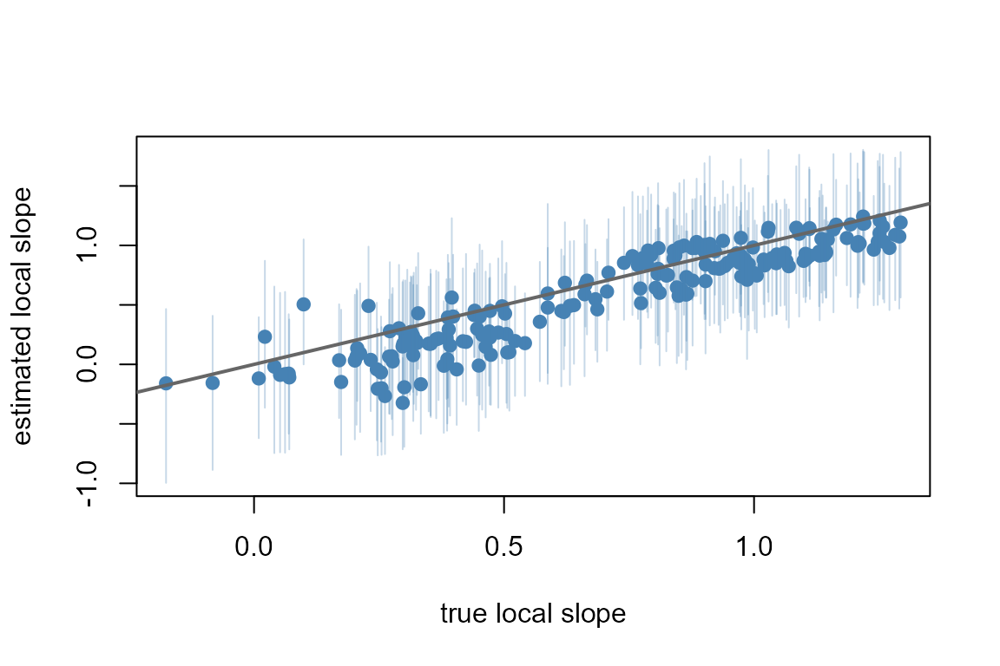
c(cor = cor(slope$mean, truth),
coverage = mean(slope$lo <= truth & truth <= slope$hi))
#> cor coverage
#> 0.9252383 0.9700000The estimates follow the identity line with a correlation of 0.93, and 97% of the 200 intervals hold the true slope. The points lie on a line slightly flatter than the identity at the extremes, where the prior pulls the field toward its mean.
The sampler reports its own convergence. diagnostics()
returns Rhat and the effective sample size for every sampled coordinate;
summarised over the 204 coordinates (two fixed effects, two
hyperparameters and 200 field values):
dg <- diagnostics(fit_svc)
c(max_rhat = max(dg$rhat), min_ess_bulk = min(dg$ess_bulk))
#> max_rhat min_ess_bulk
#> 1.030589 159.131422
glance(fit_svc)[c("n_divergent", "mean_accept")]
#> n_divergent mean_accept
#> 1 0 0.8962249The largest Rhat is 1.031, there are 0 divergent transitions, and the smallest bulk effective sample size is 159 draws. A formal check of the observation model compares the dispersion of the counts with data simulated from the posterior:
test_dispersion(fit_svc, nsim = 100)
#>
#> Simulation-based dispersion test
#>
#> data: fit_svc
#> dispersion ratio = 1.119, p-value = 0.78
#> alternative hypothesis: two.sidedThe ratio is close to one and the p-value large, so the counts are no more spread out than the fitted Poisson model predicts.
A map shows where the slope is strong. The left panel colours each site by its true slope, the right by the posterior mean; both use one colour scale.
pal <- hcl.colors(50, "viridis")
brks <- seq(min(truth, slope$mean), max(truth, slope$mean), length.out = 51)
col_of <- function(v) pal[findInterval(v, brks, all.inside = TRUE)]
op <- par(mfrow = c(1, 2), mar = c(4, 4, 2, 1))
plot(lon, lat, pch = 19, col = col_of(truth), asp = 1, main = "true slope")
plot(lon, lat, pch = 19, col = col_of(slope$mean), asp = 1,
main = "posterior mean")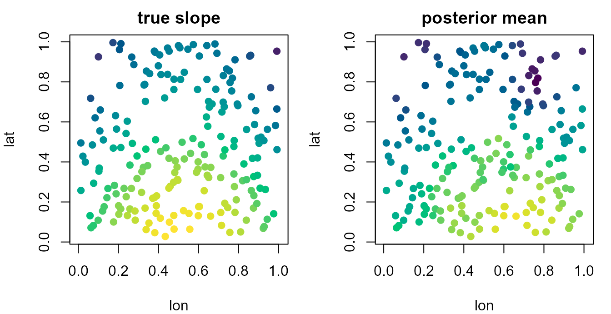
par(op)The estimated surface reproduces the high slopes along the lower middle and the low ones along the top edge, with less contrast than the truth.
Comparing against a constant slope
The simpler model fits one slope everywhere. Both fits carry a
pointwise log-likelihood, so compare_models() ranks them by
the widely applicable information criterion (WAIC), on the scale of the
expected log predictive density (elpd, higher is
better).
fit_const <- tulpa(y ~ x, data = ds, family = "poisson",
mode = "exact", control = ctl)
coef(summary(fit_const))["x", ]
#> estimate std.error 2.5 % 97.5 %
#> x 0.6514928 0.05627359 0.5510711 0.7503711
compare_models(constant = fit_const, svc = fit_svc, criterion = "waic")
#> model elpd se_elpd p_eff ic delta se_diff
#> 2 svc -318.2351 12.57920 19.951985 636.4703 0.00000 NA
#> 1 constant -358.6960 22.21309 7.166723 717.3920 -40.46086 15.82086
#> weight
#> 2 1.000000e+00
#> 1 2.679618e-18The constant model reports one slope of 0.65 with a standard error of
0.056. The SVC’s
has a standard error of 0.069. The SVC model gains 40.5 units of elpd,
with a standard error of 15.8 for the difference and about 13 additional
effective parameters (p_eff).
Prediction
With include_field = FALSE, predict() holds
the field at its centre, the average site. Its prediction is the
population-level relationship
,
and newdata needs no coordinate columns:
nd <- data.frame(x = c(-1, 0, 1))
predict(fit_svc, newdata = nd, type = "link", se.fit = TRUE,
include_field = FALSE)
#> fit se.fit lower upper
#> 1 -0.2531263 0.11768229 -0.4837793 -0.02247323
#> 2 0.3265819 0.06725877 0.1947572 0.45840669
#> 3 0.9062901 0.06832464 0.7723763 1.04020398A site-specific prediction uses the slope at that site. For the site where the estimated slope is highest and the one where it is lowest, the expected count across follows from the intercept and slope draws:
xs <- seq(-2, 2, length.out = 40)
pick <- c(which.max(slope$mean), which.min(slope$mean))
b0 <- fit_svc$draws[, "(Intercept)"]
count_band <- function(intercept, slope, xs) {
mu <- exp(intercept + outer(slope, xs))
apply(mu, 2, quantile, c(0.025, 0.5, 0.975))
}
bands <- lapply(pick, function(j) count_band(b0, slope_draws[, j], xs))
plot(NULL, xlim = range(xs), ylim = range(0, unlist(bands)), xlab = "x",
ylab = "expected count")
for (k in 1:2) {
q <- bands[[k]]
cl <- c("darkorange", "steelblue")[k]
polygon(c(xs, rev(xs)), c(q[1, ], rev(q[3, ])),
col = adjustcolor(cl, 0.25), border = NA)
lines(xs, q[2, ], col = cl, lwd = 2, lty = k)
}
legend("topleft", c("highest slope", "lowest slope"), bty = "n",
col = c("darkorange", "steelblue"), lwd = 2, lty = 1:2)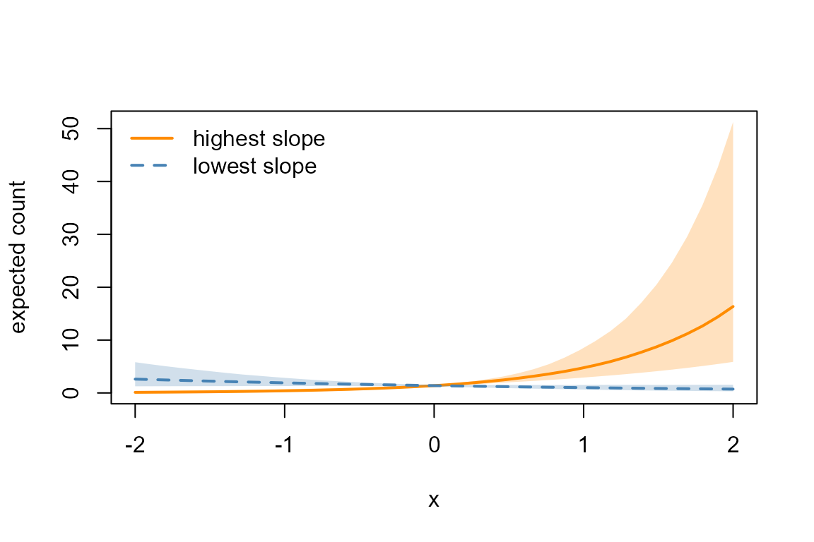
At the first site the expected count rises steeply with
;
at the second it falls slowly, the sign change the simulation built in.
These predictions are at sites the model was fitted on. With
lon and lat in newdata,
predict() also reaches coordinates the model was not fitted
on: each posterior draw of the field is carried to them by the NNGP
predictive at the nearest fitted sites. The difference between the
link-scale predictions at
and
is then the total slope there. The maps evaluate it on a 25 x 25 grid
over the study area, next to the true slope surface, on one colour
scale.
gx <- seq(0, 1, length.out = 25)
gr <- expand.grid(lon = gx, lat = gx)
s_new <- predict(fit_svc, newdata = data.frame(gr, x = 1), type = "link") -
predict(fit_svc, newdata = data.frame(gr, x = 0), type = "link")
s_true <- 0.7 + 0.6 * sin(3 * gr$lon) + 0.5 * cos(3 * gr$lat) -
mean(0.6 * sin(3 * lon) + 0.5 * cos(3 * lat))
zl <- range(s_new, s_true)
op <- par(mfrow = c(1, 2), mar = c(4, 4, 2, 1))
image(gx, gx, matrix(s_true, 25), zlim = zl, col = pal, asp = 1,
xlab = "lon", ylab = "lat", main = "true slope")
image(gx, gx, matrix(s_new, 25), zlim = zl, col = pal, asp = 1,
xlab = "lon", ylab = "lat", main = "predicted slope")
points(lon, lat, pch = 20, cex = 0.4)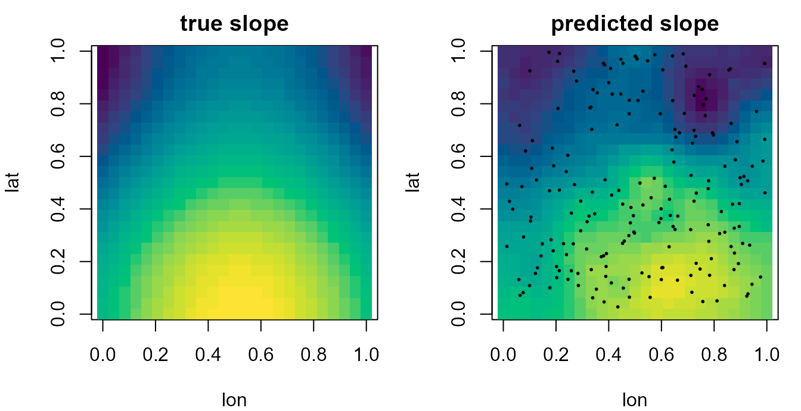
Over the grid the predicted slope correlates with the true surface at 0.93 and runs from -0.28 to 1.23. It reproduces the high band along the lower middle and the low values along the top edge.
A spatially varying intercept
With terms = 1 the field multiplies the intercept
column, which makes it an additive spatial field:
.
Simulate counts at the same 200 sites with a fixed slope of
and a baseline that varies over space.
set.seed(2)
isurf <- 0.8 * sin(3 * lon) * cos(2 * lat)
isurf <- isurf - mean(isurf)
ds$y2 <- rpois(n, exp(0.5 + isurf + 0.4 * ds$x))A fit without the field leaves the spatial baseline in the residuals. Moran’s I on the Pearson residuals of the constant model, with inverse-distance weights, tests for that structure:
fit_i0 <- tulpa(y2 ~ x, data = ds, family = "poisson",
mode = "exact", control = ctl)
moran_i(fit_i0, coords = cbind(ds$lon, ds$lat))
#>
#> Moran's I (inverse-distance weights)
#>
#> data: fit_i0
#> Moran's I = 0.049626, Expected I = -0.0050251, p-value = 4.914e-06
#> alternative hypothesis: two.sidedThe statistic is positive and the p-value below : neighbouring sites leave residuals of the same sign. Fitting the SVC on the intercept gives the baseline at each site.
fit_svci <- tulpa(y2 ~ x, data = ds, family = "poisson",
spatial = spatial_svc(~ lon + lat, nn = 8),
mode = "exact", control = ctl)
coef(summary(fit_svci))
#> estimate std.error 2.5 % 97.5 %
#> (Intercept) 0.4790399 0.06154434 0.3592209 0.5990962
#> x 0.4315739 0.05797237 0.3134611 0.5447043
icpt <- summary(svc(fit_svci))
c(cor = cor(icpt$mean, isurf),
coverage = mean(icpt$q2.5 <= isurf & isurf <= icpt$q97.5))
#> cor coverage
#> 0.8744212 1.0000000The slope interval holds the true
,
the intercept interval the true
,
and the field correlates with the true baseline at 0.87. Here the
reported deviation is compared directly with isurf, since
both are centred.
plot(isurf, icpt$mean, pch = 19, col = "steelblue",
ylim = range(icpt$q2.5, icpt$q97.5),
xlab = "true intercept deviation", ylab = "estimated deviation")
segments(isurf, icpt$q2.5, isurf, icpt$q97.5,
col = adjustcolor("steelblue", 0.3))
abline(0, 1, lwd = 2, col = "grey40")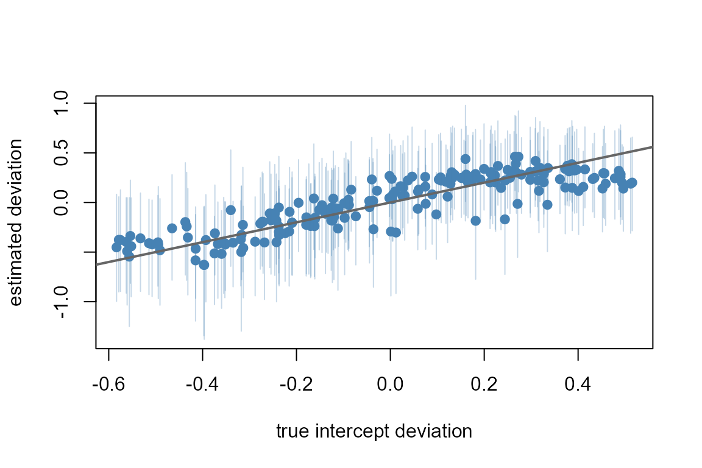
An SVC on the intercept carries the same linear predictor as a
continuous spatial field from spatial_gp(). The difference
is the route: spatial_gp() also runs under nested Laplace,
while an SVC runs only on the sampler. A model with both a varying
intercept and a varying slope passes terms = ~ x (intercept
and slope), and each term gets its own field and its own pair of
hyperparameters.
A time-varying slope
Simulating data
Take 25 years with 10 observations each. The slope of a count on is on average and swings once up and down over the period, with an amplitude of :
set.seed(3)
n_t <- 25
year <- rep(seq_len(n_t), each = 10)
wt <- 0.6 * sin(2 * pi * seq_len(n_t) / n_t)
wt <- wt - mean(wt)
dt <- data.frame(year = year, x = rnorm(length(year)))
dt$y <- rpois(nrow(dt), exp(0.3 + (0.5 + wt[year]) * dt$x))wt is centred over the 25 years, so
again estimates the average slope,
.
Fitting a random walk
temporal_tvc() names the time column, the coefficient
and the structure. The spec goes through temporal=.
fit_rw1 <- tulpa(y ~ x, data = dt, family = "poisson",
temporal = temporal_tvc("year", terms = ~ x - 1,
structure = "rw1"),
mode = "exact", control = ctl)
coef(summary(fit_rw1))
#> estimate std.error 2.5 % 97.5 %
#> (Intercept) 0.3837072 0.05353502 0.2795560 0.4822570
#> x 0.4844206 0.05178281 0.3839078 0.5770521
temporal_corr(fit_rw1)
#> mean sd q2.5 q97.5
#> tau_tvc 37.4594 23.01272 8.867804 99.70661The fixed slope interval holds
.
temporal_corr() reports the precision
of the walk’s increments, tau_tvc; its posterior median is
34, corresponding to an increment standard deviation of about
per year.
tvc() returns the field draws, one column per time
point. plot() of the result draws the deviation
with its 95% band, around zero.
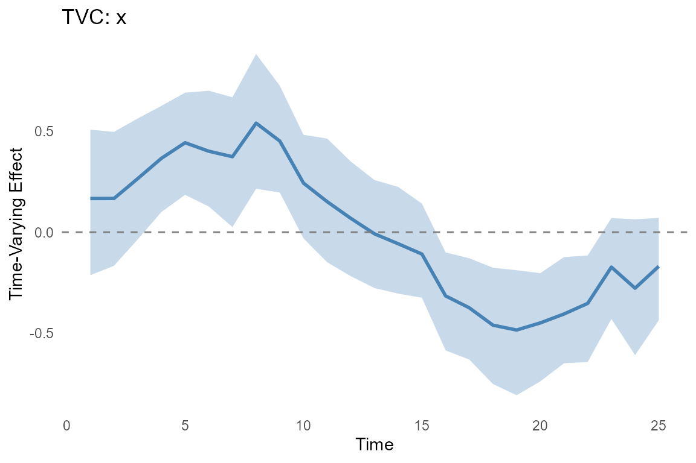
The total slope adds draw by draw, as for the SVC. A helper does it for any TVC fit with one varying term:
total_slope <- function(fit) {
d <- fit$draws[, "x"] + tvc(fit)$draws[, , 1]
data.frame(mean = colMeans(d),
lo = apply(d, 2, quantile, 0.025),
hi = apply(d, 2, quantile, 0.975))
}
s_rw1 <- total_slope(fit_rw1)
c(cor = cor(s_rw1$mean, 0.5 + wt),
coverage = mean(s_rw1$lo <= 0.5 + wt & 0.5 + wt <= s_rw1$hi))
#> cor coverage
#> 0.9720211 1.0000000
plot_slope <- function(tt, s, truth, ...) {
plot(tt, truth, type = "l", lwd = 2, ylim = range(s$lo, s$hi, truth),
xlab = "time", ylab = "slope on x", ...)
polygon(c(tt, rev(tt)), c(s$lo, rev(s$hi)),
col = adjustcolor("steelblue", 0.25), border = NA)
lines(tt, s$mean, col = "steelblue", lwd = 2, lty = 2)
legend("topright", c("truth", "estimate"), bty = "n",
col = c("black", "steelblue"), lwd = 2, lty = 1:2)
}
plot_slope(seq_len(n_t), s_rw1, 0.5 + wt)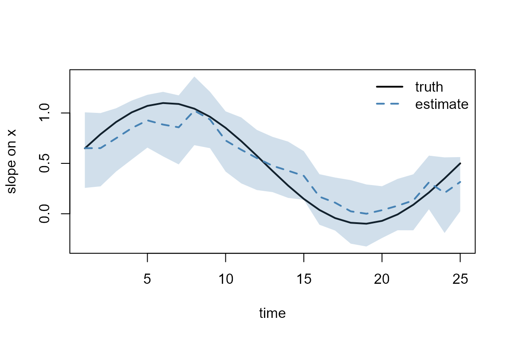
The estimated slope rises and falls with the truth, with a correlation of 0.97, and its band holds the true slope in every year. The largest Rhat is 1.018, the smallest bulk effective sample size is 142, and the dispersion test has a p-value of 0.80:
dg_t <- diagnostics(fit_rw1)
c(max_rhat = max(dg_t$rhat), min_ess_bulk = min(dg_t$ess_bulk))
#> max_rhat min_ess_bulk
#> 1.018181 141.551650
test_dispersion(fit_rw1, nsim = 100)
#>
#> Simulation-based dispersion test
#>
#> data: fit_rw1
#> dispersion ratio = 1.0528, p-value = 0.8
#> alternative hypothesis: two.sidedSecond-order walk and AR(1)
The same call takes the other grid structures. rw2
penalises changes in the year-to-year increments, so it favours a slope
that changes direction slowly; ar1 pulls the slope back
toward its mean at a rate set by
.
fit_rw2 <- tulpa(y ~ x, data = dt, family = "poisson",
temporal = temporal_tvc("year", terms = ~ x - 1,
structure = "rw2"),
mode = "exact", control = ctl)
fit_ar1 <- tulpa(y ~ x, data = dt, family = "poisson",
temporal = temporal_tvc("year", terms = ~ x - 1,
structure = "ar1"),
mode = "exact",
control = list(n_iter = 1200, warmup = 600, n_chains = 2,
seed = 1))
sapply(list(rw1 = fit_rw1, rw2 = fit_rw2, ar1 = fit_ar1), function(f) {
s <- total_slope(f)
c(cor = cor(s$mean, 0.5 + wt), mean_sd = mean((s$hi - s$lo) / 3.92))
})
#> rw1 rw2 ar1
#> cor 0.9720211 0.988102 0.9667671
#> mean_sd 0.1519968 0.116341 0.1631418
temporal_corr(fit_ar1)
#> mean sd q2.5 q97.5
#> tau_tvc 29.9522514 21.6608056 7.6531253 89.9686829
#> rho_tvc 0.8653969 0.1280018 0.5373128 0.9989648The three estimated curves have correlations from 0.967 to 0.988 with
the sine. The rw2 curve has the highest displayed
correlation, 0.988, with 0 divergent transitions among 600 retained
draws and maximum Rhat 1.037. Its minimum bulk effective sample size of
48 calls for a longer run to assess its uncertainty. The AR(1)
correlation is estimated at 0.87, with an interval that reaches 0.999:
on 25 years the data barely separate a strongly correlated stationary
process from a walk.
Comparing against a constant slope and a linear interaction
Two simpler models are candidates. The constant slope ignores time;
the interaction x * t_s lets the slope change linearly with
standardized time t_s. Time is standardized because the
sampler mixes poorly when a covariate and its interaction sit on very
different scales.
dt$t_s <- (dt$year - mean(dt$year)) / sd(dt$year)
fit_c <- tulpa(y ~ x, data = dt, family = "poisson",
mode = "exact", control = ctl)
fit_lin <- tulpa(y ~ x * t_s, data = dt, family = "poisson",
mode = "exact", control = ctl)
coef(summary(fit_lin))["x:t_s", ]
#> estimate std.error 2.5 % 97.5 %
#> x:t_s -0.3041334 0.05295698 -0.3963946 -0.1866918
compare_models(constant = fit_c, linear = fit_lin, rw1 = fit_rw1,
rw2 = fit_rw2, criterion = "waic")
#> model elpd se_elpd p_eff ic delta se_diff
#> 3 rw1 -391.8736 11.99602 9.920970 783.7473 0.00000000 NA
#> 4 rw2 -391.8853 12.22544 7.043546 783.7705 -0.01162402 1.096026
#> 2 linear -401.6368 13.38402 5.230567 803.2736 -9.76316971 4.659041
#> 1 constant -417.1355 13.74094 3.085393 834.2710 -25.26184843 8.087444
#> weight
#> 3 5.028914e-01
#> 4 4.970796e-01
#> 2 2.893234e-05
#> 1 5.375178e-12The interaction finds a real decline in the slope, an interval well below zero, because the second half of the sine is lower than the first. It cannot follow the rise in the first years. The displayed table places the two walks first, the linear interaction next and the constant slope last. The RW2 fit’s minimum bulk effective sample size is 48; longer runs would support interpreting small differences between the walks. The plot shows what each model says about the slope in each year.
b_lin <- coef(fit_lin)
t_s <- (seq_len(n_t) - mean(dt$year)) / sd(dt$year)
plot_slope(seq_len(n_t), total_slope(fit_rw2), 0.5 + wt)
lines(seq_len(n_t), b_lin["x"] + b_lin["x:t_s"] * t_s,
col = "darkorange", lwd = 2, lty = 3)
abline(h = coef(fit_c)["x"], col = "grey50", lwd = 2, lty = 4)
legend("bottomleft", c("linear interaction", "constant"), bty = "n",
col = c("darkorange", "grey50"), lwd = 2, lty = 3:4)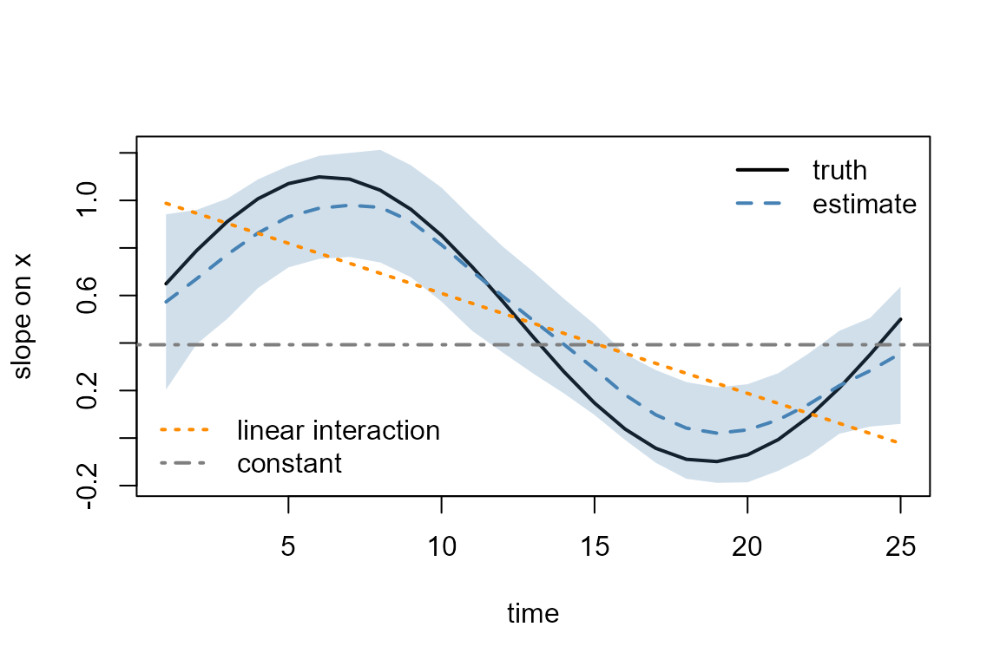
A parametric interaction is the better choice when the slope is expected to change in one direction and the trend itself is the quantity of interest: its one coefficient is easier to report than a curve. The walk is the better choice when the shape is unknown.
Prediction at a given time
With include_field = FALSE, predict() gives
the population-level line
,
the slope at the average year. A prediction for a particular year adds
that year’s deviation. The expected count across
in year 6, where the slope peaks, and in year 19, where it is
lowest:
b0_t <- fit_rw1$draws[, "(Intercept)"]
sl_t <- fit_rw1$draws[, "x"] + post_t$draws[, , 1]
bands_t <- lapply(c(6, 19), function(yr) count_band(b0_t, sl_t[, yr], xs))
plot(NULL, xlim = range(xs), ylim = range(0, unlist(bands_t)), xlab = "x",
ylab = "expected count")
for (k in 1:2) {
q <- bands_t[[k]]
cl <- c("darkorange", "steelblue")[k]
polygon(c(xs, rev(xs)), c(q[1, ], rev(q[3, ])),
col = adjustcolor(cl, 0.25), border = NA)
lines(xs, q[2, ], col = cl, lwd = 2, lty = k)
}
legend("topleft", c("year 6", "year 19"), bty = "n",
col = c("darkorange", "steelblue"), lwd = 2, lty = 1:2)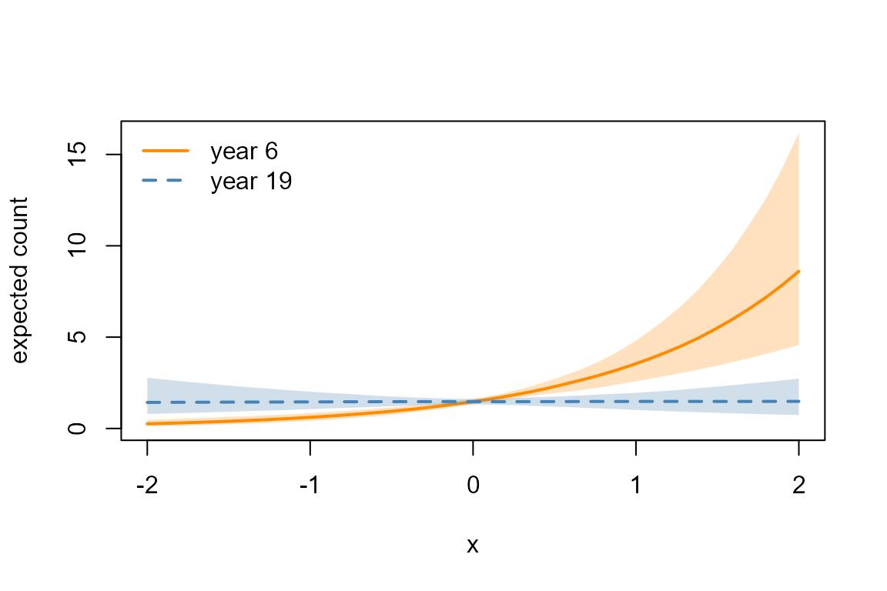
With year in newdata,
predict() reads the slope at any year: inside the data it
takes the fitted deviation, and past the last year it extends each
posterior draw of the walk with Brownian steps of the increment
variance. The link-scale prediction at
minus the one at
is the total slope.
fy <- data.frame(year = c(19, 25, 26, 28, 30))
p1 <- predict(fit_rw1, newdata = data.frame(fy, x = 1), type = "link",
se.fit = TRUE)
p0 <- predict(fit_rw1, newdata = data.frame(fy, x = 0), type = "link")
data.frame(year = fy$year, slope = round(p1$fit - p0, 3),
lower = round(p1$lower - p0, 3), upper = round(p1$upper - p0, 3))
#> year slope lower upper
#> 1 19 0.000 -0.371 0.284
#> 2 25 0.316 0.028 0.579
#> 3 26 0.311 -0.173 0.837
#> 4 28 0.302 -0.435 1.029
#> 5 30 0.294 -0.675 1.241The bounds are those of the linear predictor at shifted by the point prediction at , so they carry the intercept’s uncertainty as well. Past year 25 the slope stays at its last fitted level, about 0.30, and the interval widens with the horizon, from 0.55 wide in year 25 to 1.92 in year 30.
A time-varying intercept
terms = 1, the default, lets the baseline drift over
time with the slope held fixed. Simulate counts with the same sine as a
baseline and a slope of
:
set.seed(5)
dt$y3 <- rpois(nrow(dt), exp(0.3 + wt[dt$year] + 0.5 * dt$x))
fit_tvci <- tulpa(y3 ~ x, data = dt, family = "poisson",
temporal = temporal_tvc("year", structure = "rw1"),
mode = "exact", control = ctl)
coef(summary(fit_tvci))
#> estimate std.error 2.5 % 97.5 %
#> (Intercept) 0.3391023 0.05711700 0.2319751 0.4479062
#> x 0.4770594 0.05418746 0.3831007 0.5876838
s_i <- summary(tvc(fit_tvci))
c(cor = cor(s_i$mean, wt),
coverage = mean(s_i$q2.5 <= wt & wt <= s_i$q97.5))
#> cor coverage
#> 0.9605689 1.0000000The slope interval holds
,
the baseline deviation correlates with the true sine at 0.96, and every
one of its 25 intervals holds the truth. This is the time-varying
analogue of the varying intercept above, and the same model as an
additive temporal_rw1() trend. temporal_rw1()
runs under nested Laplace and is the faster route for a trend on its
own.
Irregular times
The grid structures count steps between distinct times. When observations are irregular, a gap of one day and a gap of thirty are both one step. Simulate 20 survey dates whose gaps are drawn from an exponential distribution, so some dates sit days apart and others weeks, over a period of 100 days, with 10 observations per date:
set.seed(4)
tt <- sort(cumsum(rexp(20, rate = 1 / 4)))
tt <- (tt - min(tt)) / diff(range(tt)) * 100
wg <- 0.6 * sin(2 * pi * tt / 70)
wg <- wg - mean(wg)
idx <- rep(seq_along(tt), each = 10)
dg <- data.frame(day = tt[idx], x = rnorm(length(idx)))
dg$y <- rpois(nrow(dg), exp(0.3 + (0.6 + wg[idx]) * dg$x))
round(range(diff(tt)), 1)
#> [1] 0.3 24.7The shortest gap is 0.3 days and the longest 25 days. Fit the slope
as a Gaussian process over the dates with structure = "gp",
which needs a numeric time column, and as an rw1 for
comparison. The default kernel is exponential, which evaluates as a
Markov chain in time.
fit_gp <- tulpa(y ~ x, data = dg, family = "poisson",
temporal = temporal_tvc("day", terms = ~ x - 1,
structure = "gp"),
mode = "exact",
control = list(n_iter = 1000, warmup = 500, n_chains = 2,
seed = 1))
fit_gr1 <- tulpa(y ~ x, data = dg, family = "poisson",
temporal = temporal_tvc("day", terms = ~ x - 1,
structure = "rw1"),
mode = "exact", control = ctl)
temporal_corr(fit_gp)
#> mean sd q2.5 q97.5
#> sigma_tvc_gp 0.5197479 0.2210478 0.2289546 1.041773
#> lengthscale_tvc_gp 63.6196911 58.5938941 4.0934494 231.918670temporal_corr() reports the GP’s marginal standard
deviation and its lengthscale, the latter in days.
score <- function(fit) {
s <- total_slope(fit)
c(cor = cor(s$mean, 0.6 + wg),
rmse = sqrt(mean((s$mean - 0.6 - wg)^2)))
}
rbind(gp = score(fit_gp), rw1 = score(fit_gr1))
#> cor rmse
#> gp 0.9446727 0.1784780
#> rw1 0.9109344 0.1941991
s_gp <- total_slope(fit_gp)
plot_slope(tt, s_gp, 0.6 + wg)
lines(tt, total_slope(fit_gr1)$mean, col = "darkorange", lwd = 2, lty = 3)
points(tt, 0.6 + wg, pch = 19, cex = 0.6)
legend("bottomleft", "rw1", bty = "n", col = "darkorange", lwd = 2, lty = 3)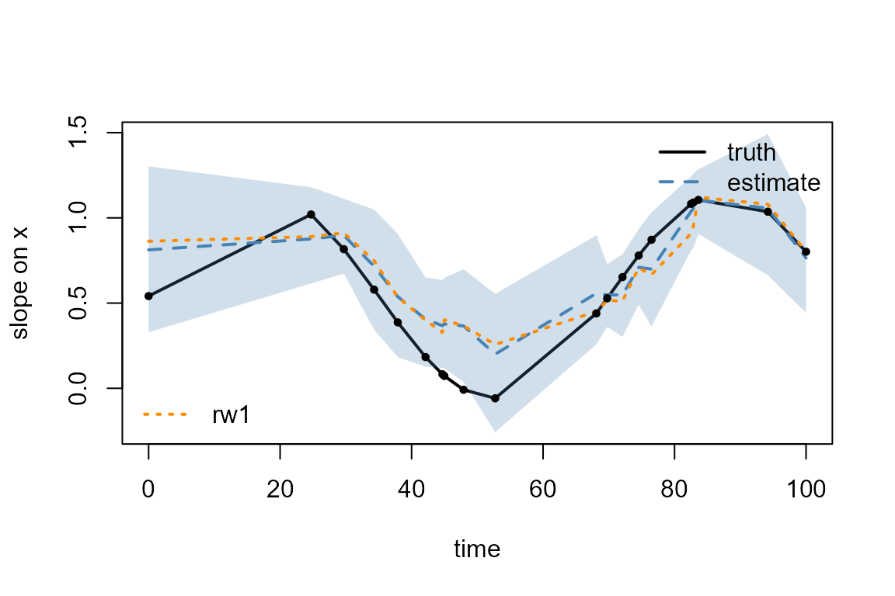
The GP follows the truth more closely than the walk: a correlation of
0.94 against 0.91 and a root-mean-square error of 0.178 against 0.194.
The walk penalises a change across a 25-day gap as much as one across a
0.3-day gap. The lengthscale is estimated at 64 days with a wide
interval, from 4 to 232 days. This GP run has one divergent transition
and a maximum Rhat of 1.062; its uncertainty estimates need further
sampling checks. cov = "matern" with nu = 1.5
or 2.5, cov = "gaussian" and
cov = "periodic" (with period= in the time
units) give smoother or periodic kernels; those take a dense Cholesky
factorization per gradient evaluation, which costs more as the number of
distinct times grows.
Prior sensitivity
For the RW1 fit here, temporal_tvc() puts a
penalized-complexity (PC) prior on the increment standard deviation
.
It is calibrated by two numbers,
,
set with sigma_prior_U and sigma_prior_alpha.
The default,
,
assigns 1% prior probability to an increment standard deviation above
one. Refit the time-varying slope under a prior ten times tighter,
,
and a much looser one,
:
fit_prior <- function(U, alpha) {
tulpa(y ~ x, data = dt, family = "poisson",
temporal = temporal_tvc("year", terms = ~ x - 1, structure = "rw1",
sigma_prior_U = U,
sigma_prior_alpha = alpha),
mode = "exact", control = ctl)
}
fits_p <- list(default = fit_rw1, tight = fit_prior(0.1, 0.01),
loose = fit_prior(3, 0.5))The PC prior’s density approaches a positive constant as approaches zero. Here has an infinite posterior mean.
For each prior, the table gives the posterior median of the precision, the spread of the estimated slope curve across years, the mean width of its 95% band and the correlation with the truth:
t(sapply(fits_p, function(f) {
s <- total_slope(f)
c(tau_median = temporal_corr(f, probs = 0.5)["tau_tvc", "q50"],
curve_sd = sd(s$mean), band = mean(s$hi - s$lo),
cor = cor(s$mean, 0.5 + wt))
}))
#> tau_median curve_sd band cor
#> default 33.93712 0.3330362 0.5958276 0.9720211
#> tight 103.68834 0.3020914 0.4695708 0.9729680
#> loose 29.17718 0.3393847 0.5859058 0.9717260
sd(0.5 + wt)
#> [1] 0.4330127The tight prior raises the median precision from 34 to 104, lowers the spread of the curve from 0.33 to 0.30 against a true 0.43, and narrows the band from 0.60 to 0.47. The loose prior gives a median precision of 29, a curve spread of 0.34 and a band width of 0.59. The correlation with the truth stays near 0.97 under all three, so the shape of the slope is set by the data and the prior acts on its amplitude. With 250 observations over 25 years the default and the loose prior give nearly the same answer; a prior as tight as is a statement that the slope barely moves, and the fit shrinks toward it.
spatial_svc() uses the same PC prior calibration on each
field’s marginal standard deviation, set through
sigma_prior_U and sigma_prior_alpha. Its range
also has a PC prior.
plot(seq_len(n_t), 0.5 + wt, type = "l", lwd = 2, xlab = "year",
ylab = "slope on x")
cls <- c("steelblue", "darkorange", "grey40")
for (k in seq_along(fits_p)) {
lines(seq_len(n_t), total_slope(fits_p[[k]])$mean, col = cls[k],
lwd = 2, lty = k + 1)
}
legend("topright", c("truth", names(fits_p)), bty = "n",
col = c("black", cls), lwd = 2, lty = 1:4)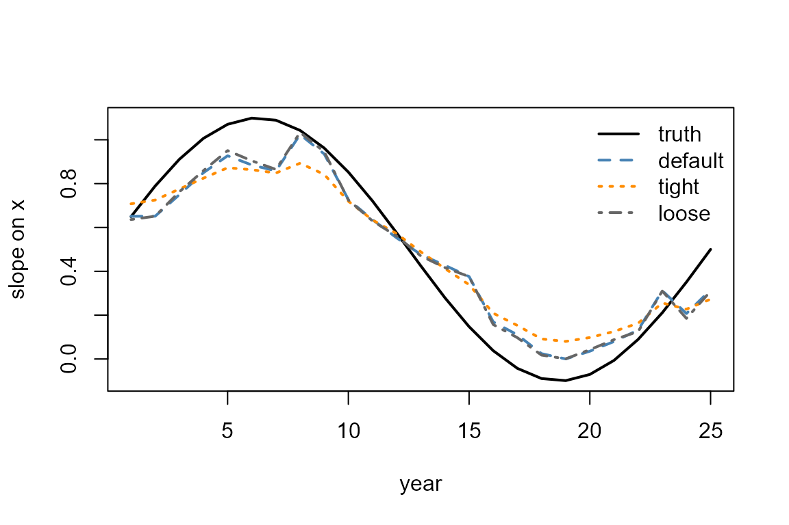
Practical guidance
- Count the replicates per node. Each varying coefficient adds one value per site or time point, informed only by the observations there and by its neighbours. The slope examples above have 10 observations per year over 25 years and one per site over 200 sites; a slope is harder to inform than an intercept, because each observation contributes in proportion to its . With fewer than about 10 time points or a few dozen sites, a parametric interaction is the safer choice.
-
Report the total coefficient. The fixed effect is
the coefficient at the average node and
svc()/tvc()return deviations from it. Add the two draw by draw, astotal_slope()does above, before reporting a slope at a place or time. -
Choose the structure from the time axis. Equally
spaced times:
rw1for a slope that can change level,rw2for a smooth one,ar1when the slope should return to a mean. Irregular times:gp. -
Compare with the simpler models. Fit the constant
coefficient and a parametric interaction too, and compare by WAIC. A
varying coefficient that does not beat both is not worth its
p_eff. -
Check convergence. These are sampler fits.
diagnostics()should show Rhat below about 1.05 andglance()no divergences; a warning fromtulpa()that the chain has not converged means more iterations (control$n_iter,control$warmup).
| Question | Structure |
|---|---|
| Does a covariate’s effect change across a map? | spatial_svc(terms = ~ x - 1) |
| Does the baseline change across a map? |
spatial_svc(), or spatial_gp() for nested
Laplace |
| Does an effect change over equally spaced times? | temporal_tvc(structure = "rw1" / "rw2" / "ar1") |
| Does an effect change over irregular times? | temporal_tvc(structure = "gp") |
| Does the effect change linearly? | an interaction x * time
|
When not to fit one:
- When the question is the level of the response, not the strength of
an effect. A spatial or temporal field on the intercept answers it, and
the dedicated
spatial_gp()andtemporal_rw1()fields run under nested Laplace. - When the covariate barely varies within a site or a year. The slope at a node is then informed by the prior alone.
- When the varying coefficient must sit beside another field. A TVC
cannot yet be combined with a spatial or
latent()field throughtulpa().
See also
- Spatial models: spatial fields on the intercept, under nested Laplace.
- Temporal models: random-walk and AR(1) trends.
- Model comparison: WAIC, LOO and the marginal likelihood.
-
?spatial_svc,?temporal_tvc,?svc,?tvc: the constructors and accessors.